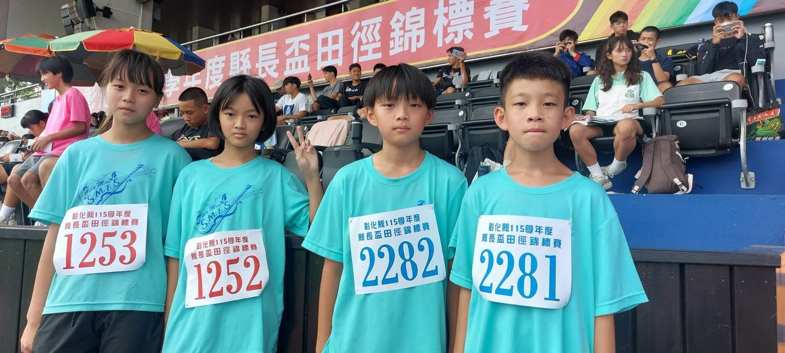
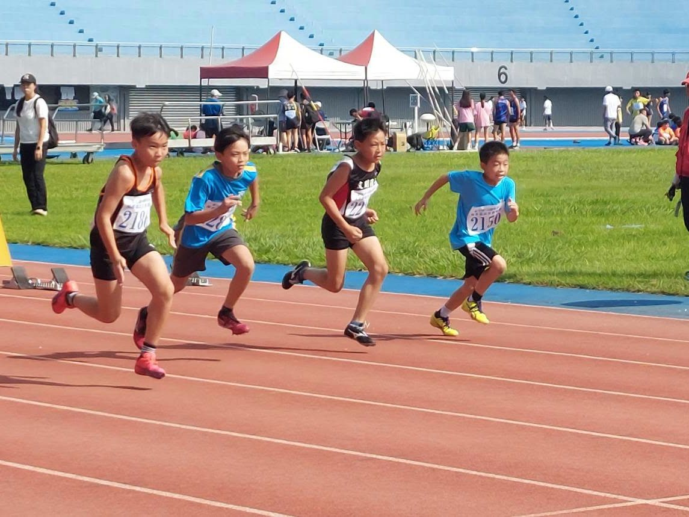
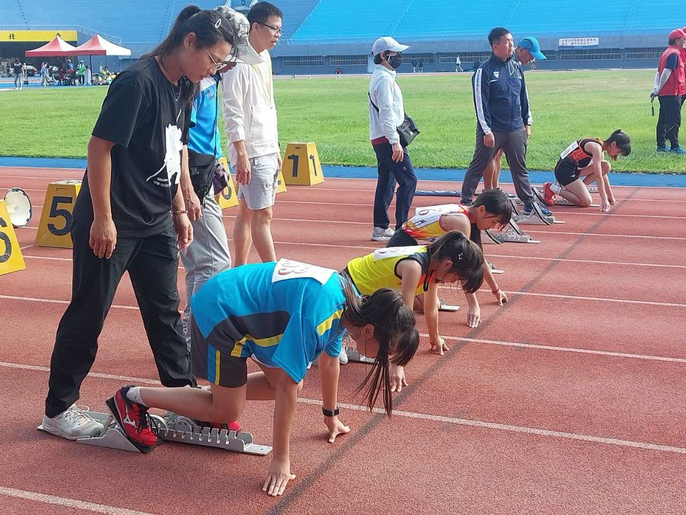

Hsinmin Elementary took part in the SY115 County Magistrate’s Cup Track and Field Championships! Four students — 張聿禮 (Class 503) and 李承諺, 湯子靚, and 翁芳酶 (Class 603) — represented our school in the individual 100-meter and 60-meter races!
For three of them — 張聿禮, 李承諺, and 湯子靚 — it was their very first track meet, a brand-new challenge and learning experience. 💪
The meet doesn’t group schools by size, so with more than a hundred runners, making the top eight is really hard! The competition was tough, but stepping onto the track and giving it everything is something to be proud of. 👏


全力衝刺，挑戰自己的速度
Besides the challenges on the track, the trip brought lots of unexpected lessons along the way!
- 🚂Math from the textbook, used for real — we took the train to Changhua County Stadium. The children had learned to read train timetables in math class, and this time they really used that skill — checking the trains and the times to catch the right one. Math is all around us!數學課本裡的時刻表，這次真的派上用場
- ❤️From class discussion to real action — fifth-grade social studies had just discussed “priority seats.” On the train, the children sitting in priority seats saw older passengers get on and stood up to offer their seats on their own — showing respect and care, and character education at its best課堂上的討論，化成生活中的行動
- 🌏Learning everywhere — on the way home after Day 1, we met foreign missionaries near Changhua Station. The teacher took the chance to explain how missionaries from The Church of Jesus Christ of Latter-day Saints (often called the Mormon church) share their faith — a perfect match for the sixth-grade social studies lesson “World Religions in Taiwan.”生活處處是課堂
- 🐿️A little surprise on campus — on Day 2, the children suggested, “Let’s walk from the stadium to the train station — it’s good leg training!” Walking down the hill through Chienkuo Technology University (建國科技大學), they spotted two squirrels — the first time they had seen squirrels so close!意外發現：校園裡的小驚喜
Sometimes the most precious learning isn’t in the classroom — it’s in every brave step we take out into the world.有時候，最珍貴的學習不在教室裡，而是在勇敢踏出去的每一步
✨ More than results! Over two days, the children tested their speed, learned to use public transportation, put classroom knowledge to work, and built observation skills, initiative, and teamwork along the way.
Thank you to our four young athletes for representing Hsinmin, and for exploring the world with curious minds! Let’s give a big hand to every child who bravely takes on a challenge. Go, Hsinmin runners! 🏃
🏃♂️【新民小將出任務！縣長盃田徑賽挑戰自我】🚂🐿️
新民國小參加115學年度縣長盃田徑錦標賽，由503張聿禮、603李承諺、603湯子靚及603翁芳酶代表學校出賽，挑戰個人100公尺及60公尺賽事！
這次參賽的四位選手中，張聿禮、李承諺和湯子靚都是第一次參加田徑比賽，對他們來說，是一次全新的挑戰與學習。💪
縣長盃田徑賽並沒有依照學校規模大小分組競賽，面對一百多位選手，要從中脫穎而出、挺進前八強，真的非常不容易！雖然競爭激烈，但孩子們願意站上賽場、全力以赴，就是值得肯定的表現。👏
這趟比賽除了運動場上的挑戰，沿途也有好多意想不到的收穫！
🚂 數學課本裡的時刻表，這次真的派上用場！
這次我們選擇搭火車前往彰化體育場。過去數學課學過如何閱讀火車時刻表，這回孩子們終於有機會實際運用，確認班次、掌握搭車時間，從課本走進真實生活，原來數學就在我們身邊！
❤️ 課堂上的討論，化成生活中的行動！
最近五年級社會課才剛討論過「優先席」的議題，沒想到這次搭火車就有了實際體驗。原本坐在優先席上的孩子們，看見年長者上車，主動起身讓座。從課堂上的討論到生活中的實踐，孩子們用行動展現了尊重與關懷，也讓我們看見品格教育最美好的樣子。
🌏 生活處處是課堂！
第一天比賽結束回程，在彰化火車站附近遇見外國傳教士傳教。老師也趁機向孩子們介紹耶穌基督後期聖徒教會（俗稱摩門教）的傳教方式，剛好呼應六年級下學期社會第一課「世界宗教在臺灣」的課程內容。課本上的知識，透過真實生活中的觀察與介紹，變得更加生動有趣！
🐿️ 意外發現：校園裡的小驚喜！
第二天回程，孩子們主動提議：「我們從彰化體育場走路到火車站吧！還可以鍛鍊腳力！」於是大家穿過建國科技大學校園，一路走下山。沒想到途中竟然遇見兩隻松鼠！孩子們第一次這麼近距離看見可愛的小松鼠，驚喜又興奮，為這趟比賽旅程增添了美好的回憶。❤️
✨ 比賽的收穫，不只是成績！
兩天的田徑賽，孩子們挑戰了自己的速度，也學會了搭乘大眾運輸工具、運用課堂知識，更在旅途中培養觀察力、行動力與團隊默契。
有時候，最珍貴的學習不在教室裡，而是在勇敢踏出去的每一步。謝謝四位小選手代表新民國小參賽，也謝謝孩子們帶著好奇心探索世界！
為每一位勇敢挑戰的孩子拍拍手！新民小將，繼續加油！
Tap 🔊 to listen · 點喇叭聽發音
The runners raced on the red track.選手們在紅色跑道上賽跑。
The runners sprint to the finish line.選手們衝刺到終點線。
The race took place in a big stadium.比賽在一座大體育場舉行。
Read the train timetable to find the next train.看火車時刻表，找出下一班車。
He gave his seat to an older passenger.他把座位讓給年長的乘客。
We saw two cute squirrels on the way.我們在路上看見兩隻可愛的松鼠。
Match the word to its meaning
把英文和中文配對
Matched 配對成功：0 / 6